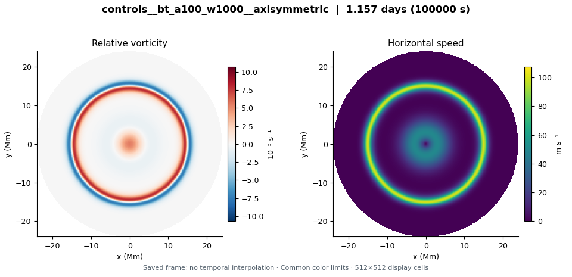
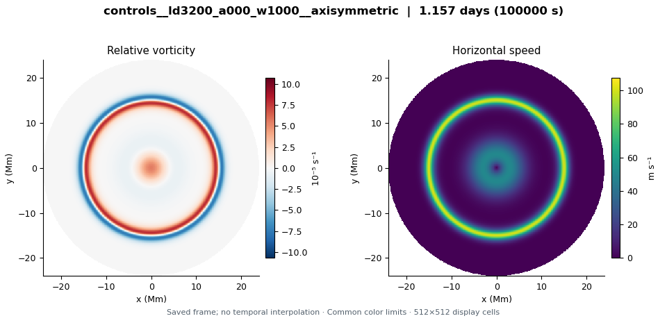
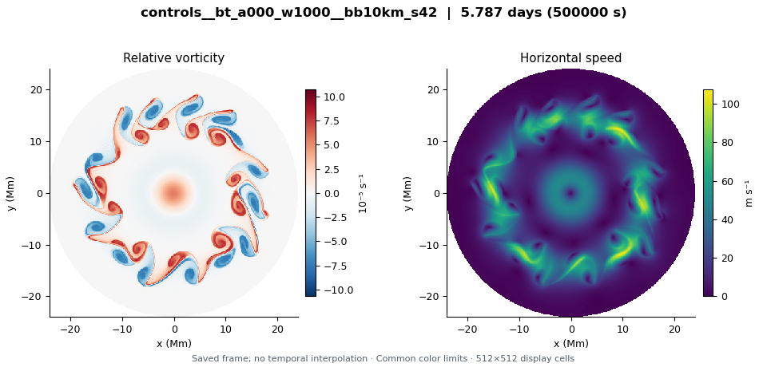

controls__bt_a000_w1000__axisymmetric
LD ∞ Mm · Whole upper base × 0 (jet + cyclone) · 1.1574 model days
Explore this run →Four unperturbed circular jet-and-cyclone controls run to 100,000 seconds, plus a barotropic broadband-perturbation case run to 500,000 seconds. These 1024-squared runs test base-flow behavior and the barotropic response; their differing durations and perturbations must be considered. Convection is off. Completion does not establish nonlinear stability or an observed Saturn hexagon.
These are exploratory simulations, not established Saturn hexagons. Read the initial condition and configuration differences before comparing runs.
LD ∞ Mm · Whole upper base × 0 (jet + cyclone) · 1.1574 model days
Explore this run →
LD ∞ Mm · Whole upper base × 1 (jet + cyclone) · 1.1574 model days
Explore this run →
LD 3.2 Mm · Whole upper base × 0 (jet + cyclone) · 1.1574 model days
Explore this run →LD 3.2 Mm · Whole upper base × 1 (jet + cyclone) · 1.1574 model days
Explore this run →
LD ∞ Mm · Whole upper base × 0 (jet + cyclone) · 5.787 model days
Explore this run →